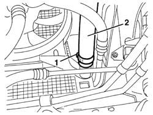
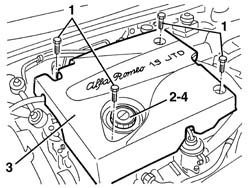
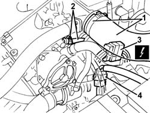
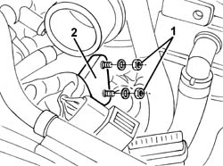
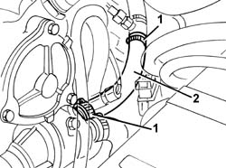

5020L20 pipe from thermostat to heater fluid temperature sensor - r r
- Path
- Procedures > 50 AUXILIARY UNITS > 5020 HEATER > 5020L additional heater > 5020L20 pipe from thermostat to heater fluid temperature sensor - r r
- Kind
- repair procedure (removal / refitting; the operation number is the code)
- Applies to
- engines: 1.9 JTD 8v , 2.4 JTD 10v; all production periods
- Interactive page
- https://sloeber94.github.io/elrnDB-a156/en/#/3238298
Applies to: engines: 1.9 JTD 8v , 2.4 JTD 10v; all production periods
 Removing
Removing
 Refitting
Refitting7055B54 under-engine guard - r r
Position a suitable container for collecting the coolant under the right side of the radiator.
1. Loosen the band fixing the right radiator pipe.
2. Disconnect the right radiator pipe and drain the coolant.

Applies to: engines: 1.9 JTD 8v , 2.4 JTD 10v; all production periods
Lower the vehicle and open the bonnet lid.
1. Undo the bolts fixing the bonnet lid.
2. Undo the engine oil filler plug.
3. Remove the bonnet lid.
4. Retighten the engine oil filler plug.

Applies to: engines: 1.9 JTD 8v , 2.4 JTD 10v; all production periods
1. Disconnect the band and move the air intake pipe.
2. Disconnect the band and move the oil vapour recovery pipe.
3. Disconnect the electrical connections.
 | Name | Connector |
|---|---|---|
3 | Front/engine connection |
4. Disconnect the band retaining the electrical connection.

Applies to: engines: 1.9 JTD 8v , 2.4 JTD 10v; all production periods
1. Unscrew the nuts.
2. Move the bracket.

Applies to: engines: 1.9 JTD 8v , 2.4 JTD 10v; all production periods
1. Disconnect the clamps
2. Remove the pipe from the coolant temperature sensor thermostat to the heater.

Applies to: engines: 1.9 JTD 8v , 2.4 JTD 10v; all production periods
Refitting
RemovingCheck that the pipe from the coolant temperature sensor thermostat to the heater is not damaged.
Position the pipe and secure it using the bands.
Position the bracket and secure it using the nuts.
Connect the retaining band for the electrical connection.
Connect the electrical connection
Position the oil vapour recovery pipe and secure it using the band.
Position the air intake pipe and secure it using the band.
Undo the engine oil filler plug.
Position the bonnet lid.
Tighten the engine oil filler plug.
Tighten the bolts fixing the bonnet lid.
Raise the vehicle.
Connect the right radiator pipe and fasten it using the band.
Refill the engine cooling circuit using the recommended fluid.
 | Type | Component | Name | Qty. |
|---|---|---|---|---|
- | Fluid | ENGINE COOLING CIRCUIT | Alfa Romeo Climafluid Super Permanent - 40 °C | - |
Visually inspect that there are no leads from the cooling circuit.
7055B54 under-engine guard - r r
Check that the additional heating system is working properly.